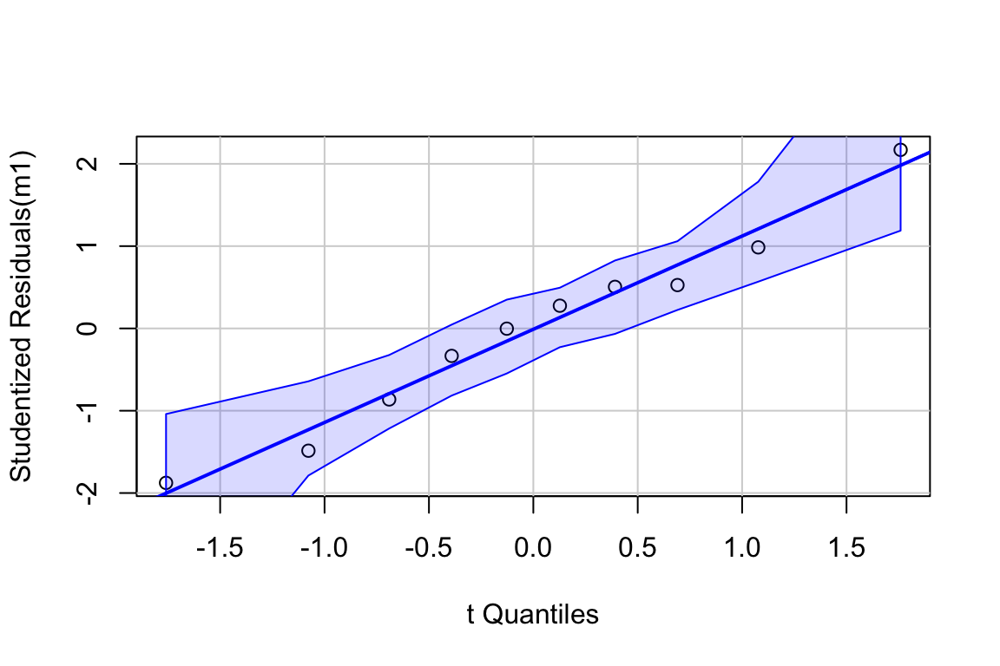
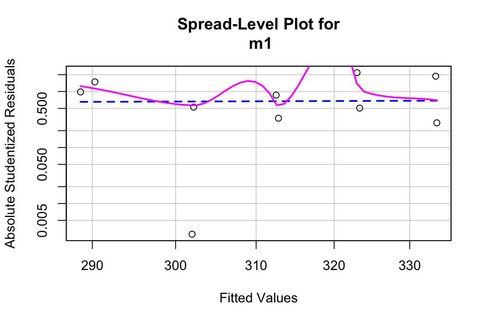
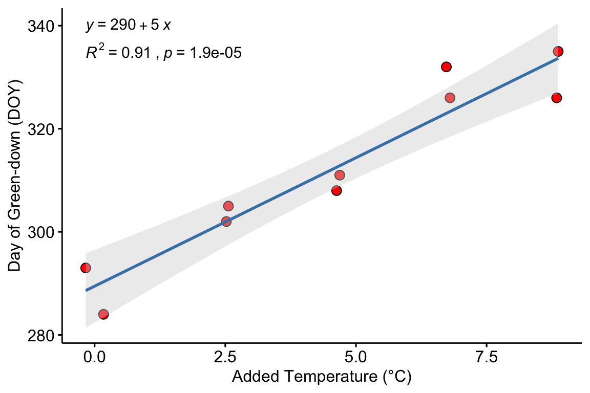
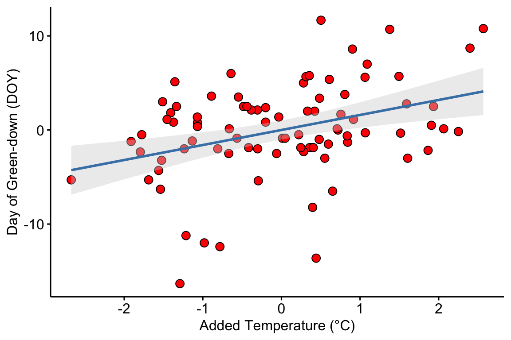
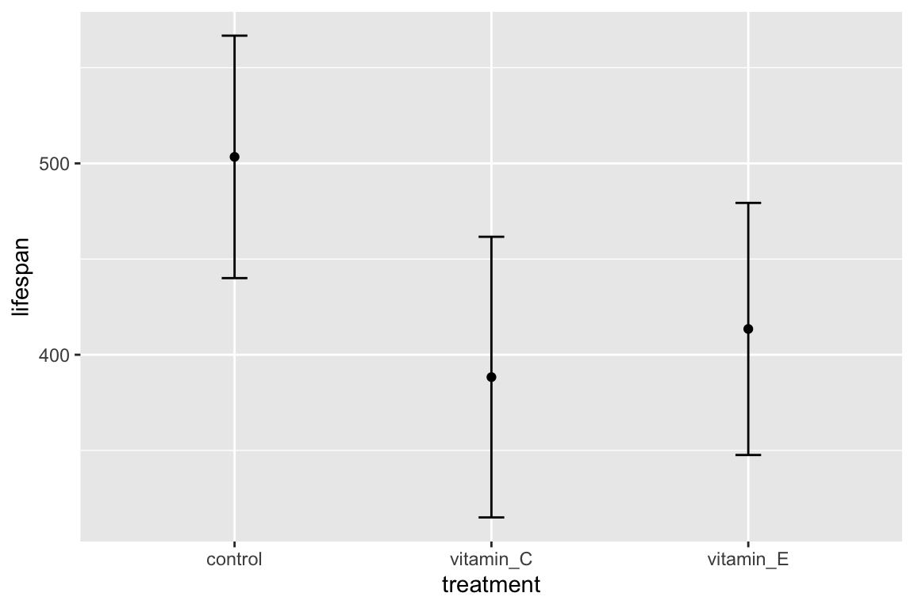
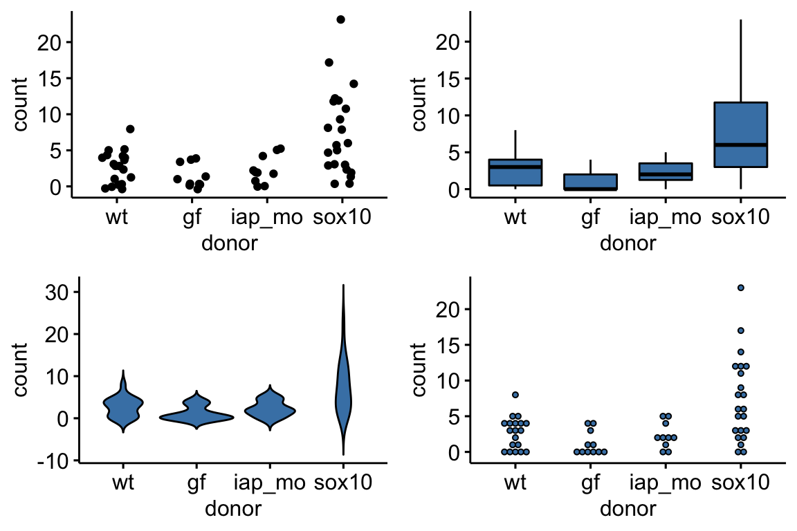

- Preface
- Part I: Getting Started
- 1 Getting Started – R Projects and R Markdown
- Part II: An introduction to the analysis of experimental data with a linear model
- 2 Analyzing experimental data with a linear model
- Background physiology to the experiments in Figure 2 of “ASK1 inhibits browning of white adipose tissue in obesity”
- Analyses for Figure 2 of “ASK1 inhibits browning of white adipose tissue in obesity”
- 2.2 Setup
- 2.3 Data source
- 2.4 control the color palette
- 2.5 useful functions
- 2.6 figure 2b – effect of ASK1 deletion on growth (body weight)
- 2.7 Figure 2c – Effect of ASK1 deletion on final body weight
- 2.7.1 Figure 2c – import
- 2.7.2 Figure 2c – check own computation of weight change v imported value
- 2.7.3 Figure 2c – exploratory plots
- 2.7.4 Figure 2c – fit the model: m1 (lm)
- 2.7.5 Figure 2c – check the model: m1
- 2.7.6 Figure 2c – fit the model: m2 (gamma glm)
- 2.7.7 Figure 2c – check the model, m2
- 2.7.8 Figure 2c – inference from the model
- 2.7.9 Figure 2c – plot the model
- 2.7.10 Figure 2c – report
- 2.8 Figure 2d – Effect of ASK1 KO on glucose tolerance (whole curve)
- 2.9 Figure 2e – Effect of ASK1 deletion on glucose tolerance (summary measure)
- 2.10 Figure 2f – Effect of ASK1 deletion on glucose infusion rate
- 2.11 Figure 2g – Effect of ASK1 deletion on tissue-specific glucose uptake
- 2.12 Figure 2h
- 2.13 Figure 2i – Effect of ASK1 deletion on liver TG
- 2.14 Figure 2j
- Part III: R fundamentals
- 3 Data – Reading, Wrangling, and Writing
- 4 Plotting Models
- Part IV: Some Fundamentals of Statistical Modeling
- 5 Variability and Uncertainty (Standard Deviations, Standard Errors, Confidence Intervals)
- 6 P-values
- 6.1 A p-value is the probability of sampling a value as or more extreme than the test statistic if sampling from a null distribution
- 6.2 Pump your intuition – Creating a null distribution
- 6.3 A null distribution of t-values – the t distribution
- 6.4 P-values from the perspective of permutation
- 6.5 Parametric vs. non-parametric statistics
- 6.6 frequentist probability and the interpretation of p-values
- 6.7 Some major misconceptions of the p-value
- 6.7.1 Misconception: p is the probability that the null is true and \(1-p\) is probability that the alternative is true
- 6.7.2 Misconception: a p-value is repeatable
- 6.7.3 Misconception: 0.05 is the lifetime rate of false discoveries
- 6.7.4 Misconception: a low p-value indicates an important effect
- 6.7.5 Misconception: a low p-value indicates high model fit or high predictive capacity
- 6.8 What the p-value does not mean
- 6.9 Recommendations
- 6.10 Problems
- 7 Errors in inference
- Part V: Introduction to Linear Models
- 8 An introduction to linear models
- 8.1 Two specifications of a linear model
- 8.2 A linear model can be fit to data with continuous, discrete, or categorical \(X\) variables
- 8.3 Statistical models are used for prediction, explanation, and description
- 8.4 What do we call the \(X\) and \(Y\) variables?
- 8.5 Modeling strategy
- 8.6 Predictions from the model
- 8.7 Inference from the model
- 8.8 “linear model,”regression model“, or”statistical model"?
- 9 Linear models with a single, continuous X
- 9.1 A linear model with a single, continuous X is classical “regression”
- 9.1.1 Analysis of “green-down” data
- 9.1.2 Learning from the green-down example
- 9.1.3 Using a regression model for “explanation” – causal models
- 9.1.4 Using a regression model for prediction – prediction models
- 9.1.5 Using a regression model for creating a new response variable – comparing slopes of longitudinal data
- 9.1.6 Using a regression model for for calibration
- 9.2 Working in R
- 9.2.1 Fitting the linear model
- 9.2.2 Getting to know the linear model: the
summaryfunction - 9.2.3 Inference – the coefficient table and Confidence intervals
- 9.2.4 How good is our model? – Model checking
- 9.2.5 Plotting models with continuous X
- 9.2.6 Creating a table of predicted values and 95% prediction intervals
- 9.3 Hidden code
- 9.4 Try it
- 9.5 Intuition pumps
- 9.1 A linear model with a single, continuous X is classical “regression”
- 10 Linear models with a single, categorical X
- 11 Model Checking
- 12 Model Fitting and Model Fit (OLS)
- 13 Best practices – issues in inference
- Part VI: More than one \(X\) – Multivariable Models
- 14 Adding covariates to a linear model
- 14.1 Adding covariates can increases the precision of the effect of interest
- 14.2 Understanding a linear model with an added covariate – heart necrosis data
- 14.3 Understanding interaction effects with covariates
- 14.4 Understanding ANCOVA tables
- 14.5 Working in R
- 14.6 Best practices
- 14.7 Best practices 2: Use a covariate instead of normalizing a response
- 15 Two (or more) Categorical \(X\) – Factorial designs
- 15.1 Factorial experiments
- 15.1.1 Model coefficients: an interaction effect is what is leftover after adding the treatment effects to the control
- 15.1.2 What is the biological meaning of an interaction effect?
- 15.1.3 The interpretation of the coefficients in a factorial model is entirely dependent on the reference…
- 15.1.4 Estimated marginal means
- 15.1.5 In a factorial model, there are multiple effects of each factor (simple effects)
- 15.1.6 Marginal effects
- 15.1.7 The additive model
- 15.1.8 Reduce models for the right reason
- 15.1.9 What about models with more than two factors?
- 15.2 Reporting results
- 15.3 Working in R
- 15.4 Problems
- 15.1 Factorial experiments
- 16 ANOVA Tables
- 17 Predictive Models
- Part VII – Expanding the Linear Model
- 18 Models with random effects – Blocking and pseudoreplication
- 18.1 Random effects
- 18.2 Random effects in statistical models
- 18.3 Linear mixed models are flexible
- 18.4 Blocking
- 18.5 Pseudoreplication
- 18.6 Mapping NHST to estimation: A paired t-test is a special case of a linear mixed model
- 18.7 Advanced topic – Linear mixed models shrink coefficients by partial pooling
- 18.8 Working in R
- 19 Models for longitudinal experiments – pre-post designs
- 19.1 Best practice models
- 19.2 Common alternatives that are not recommended
- 19.3 Advanced models
- 19.4 Understanding the alternative models
- 19.4.1 (M1) Linear model with the baseline measure as the covariate (ANCOVA model)
- 19.4.2 (M2) Linear model of the change score (change-score model)
- 19.4.3 (M3) Linear model of post-baseline values without the baseline as a covariate (post model)
- 19.4.4 (M4) Linear model with factorial fixed effects (fixed-effects model)
- 19.4.5 (M5) Repeated measures ANOVA
- 19.4.6 (M6) Linear mixed model
- 19.4.7 (M7) Linear model with correlated error
- 19.4.8 (M8) Constrained fixed effects model with correlated error (cLDA model)
- 19.4.9 Comparison table
- 19.5 Example 1 – a single post-baseline measure (pre-post design)
- 19.6 Working in R
- 20 Generalized linear models I: Count data
- 20.1 The generalized linear model
- 20.2 Count data example – number of trematode worm larvae in eyes of threespine stickleback fish
- 20.2.1 Modeling strategy
- 20.2.2 Checking the model I – a Normal Q-Q plot
- 20.2.3 Checking the model II – scale-location plot for checking homoskedasticity
- 20.2.4 Two distributions for count data – Poisson and Negative Binomial
- 20.2.5 Fitting a GLM with a Poisson distribution to the worm data
- 20.2.6 Model checking fits to count data
- 20.2.7 Fitting a GLM with a Negative Binomial distribution to the worm data
- 20.3 Working in R
- 20.4 Problems
- 21 Linear models with heterogenous variance
- Part V: Expanding the Linear Model – Generalized Linear Models and Multilevel (Linear Mixed) Models
- 22 Plotting functions (#ggplotsci)
- Appendix 1: Getting Started with R
- Appendix 2: Online Resources for Getting Started with Statistical Modeling in R
- Appendix 3: Fake Data Simulations
4.3 Working in R
A reasonable goal of any research project should be a script to generate the final plots entirely within the R environment and not rely on external drawing software to add finishing features. ggplot2 is one of the major plotting environments in R and the one that seems to have the strongest following, especially among new R users. ggplot2 has the ability to generate extremely personalized and finished plots. However, creating a plot with multiple layers (bars, lines, error intervals, raw data points, p-values, text annotations) can often require many hours of googling.
ggpubr is an extension to ggplot2 (it calls ggplot2 functions under the hood) and provides many canned functions for producing the kinds of ggplots that are published in biological journals. With one line of script, a researcher can generate a publishable plot that is as good or better than many published plot.
Here I show how to add custom (ggplot2) features to a ggpubr plot
Throughout this book, ggpubr is used to create a basic plot and then additional features are added to the basic plot using ggplot2 functions.
4.3.1 Unpooled SE bars and confidence intervals
ggplot2 and ggpubr default to unpooled error intervals (standard error bars and confidence intervals).
gg1 <- ggbarplot(data = exp2d,
x = "donor",
y = "count",
add = c("mean_se"),
fill = "steelblue"
)
gg2 <- ggbarplot(data = exp2d,
x = "donor",
y = "count",
add = c("mean_ci"),
fill = "steelblue"
)
plot_grid(gg1, gg2, ncol=2, labels="AUTO")
Figure 4.5: (A) Mean and 1 SE error bar. (B) Mean and 95% CI.
4.3.2 Adding bootstrap intervals
A bootstrap CI uses resamples of the data to estimate the interval and is a better choice than the default CI for data such as counts and proportions. The plot below uses ggpubr to create a stripchart of the data and the color of the data points are “de-emphasized” – in order to emphasize the mean and CI – by making them more transparent (using the argument alpha). alpha is added before the argument to add the mean in order to no de-emphasize the mean.
set.seed(1)
gg.boot <- ggstripchart(data=exp2d,
x = "donor",
y = "count",
alpha = 0.4,
add = "mean"
) +
stat_summary(fun.data = "mean_cl_boot",
geom = "errorbar",
width = 0.1) +
NULL
gg.bootFigure 4.6: Sample means with bootstrapped 95% confidence intervals.
4.3.3 Adding modeled means and error intervals
This section is extremely important for implementing the work flow advocated in this text. The goal is to plot the modeled means with some sort of error interval, typically a confidence interval, and to show the data or a summary of the data in a single plot. The procedure is
- fit the model
- use the fit model to estimate the modeled means and confidence limits using
emmeansfrom the emmeans package. - use the
emmeanobject to estimate the contrasts of interests using thecontrastfunction from emmeans. - Use the objects from steps 2 and 3 to plot the modeled means
Step 1: Fit the model. A negative binomial, generalized linear model with log-link is fit to the count data.
## Estimate Std. Error z value Pr(>|z|)
## (Intercept) 0.9873867 0.2229971 4.4278004 9.519895e-06
## donorgf -0.8203326 0.4227008 -1.9406930 5.229553e-02
## donoriap_mo -0.1544775 0.3878578 -0.3982839 6.904209e-01
## donorsox10 1.0091672 0.2862047 3.5260325 4.218353e-04- The estimates and SE are on the link scale, which means they are in log-transformed space (or “log space”). Exponentiate these with exp(x) to backstransform these to the the response scale which is the scale of the measurement (number of neutrophils).
Step 2: Estimate the modeled means and confidence levels. The second step is to pass the fit model object (m1) to emmeans to estimate the modeled means.
## donor response SE df asymp.LCL asymp.UCL
## wt 2.68 0.599 Inf 1.734 4.16
## gf 1.18 0.424 Inf 0.585 2.39
## iap_mo 2.30 0.730 Inf 1.235 4.28
## sox10 7.36 1.321 Inf 5.181 10.47
##
## Confidence level used: 0.95
## Intervals are back-transformed from the log scale- We specify the means that we want to estimate with “specs =”. Here, we want to estimate the means of the levels of \(donor\).
- Because the linear predictor of the model is on the log scale, we use the “type” argument to specify that we want the means to be backtransformed to the response scale, which is the scale of the measurement (number of cells)
- It can be useful to convert the emmeans table m1.emm to a data.table (or data.frame or tibble) using
m1.emm <- data.table(m1.emm). Bug alert If you do this, the object cannot be passed to the next step, thecontrastfunction. So if you want the emmeans table as a data.table, assign it to a different name, for examplem1.emm_dt <- data.table(m1.emm).
Step 3: Compute the contrasts, with p-values and confidence levels. Contrasts among levels, or combinations of levels, are computed by passing the emmeans object (m1.emm) to the contrast function.
m1.pairs <- contrast(m1.emm, method="revpairwise", adjust="none") %>%
summary(infer=c(TRUE, TRUE))
m1.pairs## contrast ratio SE df asymp.LCL asymp.UCL z.ratio p.value
## gf / wt 0.440 0.186 Inf 0.192 1.01 -1.941 0.0523
## iap_mo / wt 0.857 0.332 Inf 0.401 1.83 -0.398 0.6904
## iap_mo / gf 1.946 0.933 Inf 0.761 4.98 1.389 0.1647
## sox10 / wt 2.743 0.785 Inf 1.566 4.81 3.526 0.0004
## sox10 / gf 6.231 2.501 Inf 2.837 13.68 4.558 <.0001
## sox10 / iap_mo 3.202 1.167 Inf 1.567 6.54 3.192 0.0014
##
## Confidence level used: 0.95
## Intervals are back-transformed from the log scale
## Tests are performed on the log scale- Here, we set “method” to “revpairwise” in order to compute contrasts among all pairs of levels of \(donor\). There are \(m = 4\) levels and so \(m(m-1)/2 = 6\) pairwise contrasts. “revpairwise” is used instead of “pairwise” because the former sets the direction of the contrasts that include the reference as non-reference level minus reference level.
- I use the “adjust” argument to specify no p-value adjustment for multiple tests.
- the contrast object is then piped (%>%) to the summary function, where I pass to the argument “infer”, that I want both the confidence intervals (the first TRUE) and p-values (the second TRUE)
- this step isn’t necessary if we were plotting only modeled means and CIs but 1) we almost always want contrasts with a fit model and so that is done here as part of the uninterrupted work flow that this book advocates and 2) we do use the p-values and CIs from this table (m1.pairs) in the final plot below.
- Bug alert again, the emmeans table m1.emm must be passed to
contrastas an emmeans object. If you have converted this object to a data.table, you will get an error. See the last note in Step 2.
Step 4: Plot the modeled means and 95% error intervals.
The code below first creates the stripchart using the ggpubr function and then adds the confidence intervals using geom_errorbar and means using geom_point. The stripchart uses the data in the exp2d data.table. The errorbar and mean use the values in m1.emm object created by the emmeans function. The geom_errorbar and geom_point functions require an “aesthetic” to tell ggplot which column contains the y values of the points to plot (the “x” values are still in the column “donor”, which is a column in both the exp2d data.table and m1.emm). The name of the column containing the “y” values in m1.emm is “response”.
set.seed(1)
gg.nb <- ggstripchart(data=exp2d,
x="donor",
y="count",
alpha = 0.4) +
ylab("Neutrophil count") +
geom_errorbar(data=summary(m1.emm),
aes(y=response,
ymin=asymp.LCL,
ymax=asymp.UCL),
width=0.1) +
geom_point(data=summary(m1.emm),
aes(y=response),
size=2) +
NULL
gg.nbFigure 4.7: Modeled means and 95% confidence interval computed from a negative binomial generalized linear model.
Some notes on the plot code
- A column name passed to a
ggpubrfunction must be in quotes but a column name passed to aggplot2function cannot be in quotes - Bug alert. The data passed to ggplot2 must be a data.frame. In order for the ggplot2 functions to use the m1.emm object, the object has to be passed as
summary(m1.emm). - Bug alert. Because the m1.emm table does not have a column named “count”, which is the “y” column specified in
ggstripchart, you must supply a new “y” column name to theaesfunction ofgeom_errorbarandgeom_point. This is the name of the column in the emmeans table containing the modeled means. In m1.emm, this name is “response” but it can take different names in different emmeans tables, depending on the fit model.
4.3.4 Adding p-values
In this section, I show how to add p-values to a ggpubr plot using stat_compare_means. Because this function has only a limited set of models that can be used to compute the p-values, I don’t find it very useful and instead recommend adding custom p-values from the fit model (or from a permutation test) using the method in the next section.
For this example, a “t.test” is used to compute the p-values. The mean and error are the sample-based estimates because these, and not the modeled estimates, are consistent with the t-test p-values.
compare_list <- list(c("sox10", "iap_mo"), c("sox10", "gf"), c("sox10", "wt"))
gg.sample <- ggstripchart(data=exp2d,
x="donor",
y="count",
alpha = 0.4,
add=c("mean_ci")) +
stat_compare_means(method = "t.test", comparisons=compare_list) +
ylab("Neutrophil count") +
NULL
gg.sampleFigure 4.8: t-test p-values for the plot of sample means and CIs. The p-values were computed using ggpubr’s function stat_compare_means.
Notes on the code
The pairs to compare with a p-value are specified with
comparison =. The order of the pairs in the list function determine the order plotted from bottom (lowest on the y-axis) to top (highest on the y-axis).It is important to know what exactly is being computed when analyzing data and reporting results and “t test” is not sufficient to know this. The t-test could be the classic t-test or a Welch test. In this example, there are multiple comparisons and the standard error of the test statistic could be the pooled estimate from the linear model, or a pairwise estimate computed separately for each pair. And, given the multiple comparisons, the p-values could be adjusted or not. These kinds of questions can be checked with a function’s help page.
?stat_compare_meansdoesn’t answer these questions but suggestscompare_means, which also doesn’t answer these questions. The script below has checks to see what p-values the function is returning. Run it in your session by changing the value of check_it to TRUE.
# checks on the p-value
# t-tests using SE pooled over all four groups
check_it <- FALSE
if(check_it==TRUE){
m1.lm <- lm(count~donor, data=exp2d)
m1.lm.emm <- emmeans(m1.lm, specs="donor")
contrast(m1.lm.emm, method="trt.vs.ctrl", ref=4, adjust="none") # pooled SD
pairwise.t.test(exp2d$count, exp2d$donor, p.adjust.method="none", pool.sd=FALSE) # non-pooled SD
# compare
t.test(count~donor, data=exp2d[donor=="wt" | donor=="sox10"]) # matches, this is Welch t
t.test(count~donor, data=exp2d[donor=="wt" | donor=="sox10"], var.equal=TRUE)
}So, the p-values returned by stat_compare_means(method="t.test") are computed from independent (not pooled over the four groups) Welch t-tests.
4.3.5 Adding custom p-values
If we want to add permutation p-values to the plot with bootstrapped CIs (4.6 or add p-values from the generalized linear model to the plot of modeled means and CIs (4.7, we need to use the function stat_pvalue_manual from the ggpubr package. In order to implement this, we need to add a step to the work flow path above
Step 5: Add group columns and a column of formatted p-values to the contrast table
The stat_pvalue_manual function needs to read a data frame with a columns labeled “group1” and “group2” that contain the pairs of levels to compare with a plotted p-value and a column “p” containing the nicely formatted p-values to add to the plot. There is no R function to create this table, but here is a script to add these to the contrast object returned by the contrast function of emmeans. In this example, I use m1.pairs from above and add the p-values to the plot of modeled means and CIs (4.7.
First, we need these functions. Run these two lines to define the functions odd and even
Second, we need to use these functions to add the columns. There are several R packages that provide functions to format p-values. Here, I use the function pvalString from the lazyWeave package. This script also uses str_split from the package stringr.
# convert m1.pairs to a data.table and assign to a new object, in order to
# keep a clean copy of m1.pairs
m1.pvalues <- data.table(m1.pairs)
# if the linear model is from a glm with log link, use this
groups <- unlist(str_split(m1.pvalues$contrast, " / "))
# add the group1 and group 2 columns
m1.pvalues[, group1 := groups[odd(1:length(groups))]]
m1.pvalues[, group2 := groups[even(1:length(groups))]]
# create a column of nicely formatted p-values for display.
m1.pvalues[, p := pvalString(p.value)]Bug alert notes on the script to build the p-value table, if you don’t want your code to fail.
- The script to extract the pair of group labels
str_split(m1.pvalues$contrast, " / "))has to be written so that the characters within the quotes matches the characters separating the groups in the “contrast” column of the contrast table (here, m1.pairs). This will typically be either a space-minus-space or a space-slash-space. If the model fit islmand the response is not transformed, then the correct code isstr_split(m1.pvalues$contrast, " - ")). Regardless, look at the table to check. - In step 3 above, we took the contrast table object and passed it to the function
summary, which converts the contrast table object to a data.frame. If we had skipped this step,data.table(m1.pairs)would fail. Instead, we’d have to usedata.table(summary(m1.pairs)).
Now we can add the p-value to the ggplot object gg.nb created above. This is the beauty of a ggplot object (including those created by ggpubr), we can just keep adding stuff to it.
gg.nb <- gg.nb +
stat_pvalue_manual(m1.pvalues[4:6,], # only show sox effects
label = "p",
y.position=c(31, 28, 25)) +
NULL
gg.nbFigure 4.9: Effects and means plot. Top panel: Effects (top panel) of treatments on neutrophil count. Bottom panel: modeled means of treatment levels with 95% confidence intervals.
Notes on adding manual p-values to the plot:
- The pairs of groups to compare are specified by indexing the rows of m1.pvalues. Above, I limit the comparisons to those in rows 4-6. If I wanted to specify non-continous rows, I could use something like
m1.pvalues[c(1,3,5),], for example. - The most manual part of adding manual p-values is setting the position for the brackets using the “position” argument. The values in this argument are the y-coordinates of the brackets. This may take some trial-and-error to position the brackets satisfactorily.
4.3.5.1 Modeled error intervals of the effect
For the plot of effects, we use table of contrasts m1.pairs as the data.
gg.effects <- ggdotplot(data = m1.pairs,
x="contrast",
y="ratio",
color = "steelblue",
fill = "steelblue",
size=0.5) +
geom_errorbar(aes(x=contrast,
ymin=asymp.LCL,
ymax=asymp.UCL),
width=0.15,
color="steelblue") +
ylab("Effect ratio") +
geom_hline(yintercept=1, linetype = 2) +
coord_flip() +
NULL
gg.effects
4.3.5.2 Combining effects and response plots
The ggplots are combined using plot_grid from the package cowplot
gg.effects <- gg.effects + scale_y_continuous(position="right")
plot_grid(gg.effects, gg.nb, nrow=2, align = "v", rel_heights = c(1, 2))
4.3.6 Plotting two factors
The data are from figure 6d. This solution requires computing either the raw or modeled means and errors and adding these to a base ggpubr plot. Many packages have summary statistics functions for means, standard deviations, and standard errors. This is easily done by simply computing the statistics using data.table functionality.
# compute raw statistics
# enclosing the line within parentheses prints the result to the console!
(exp6d.raw <- exp6d[!is.na(count), .(count=mean(count),
se=sd(count)/sqrt(.N)),
by=.(treatment, strain)]
)## treatment strain count se
## 1: control wt 13.08333 2.310904
## 2: control sox10 45.61538 6.259903
## 3: transplant wt 16.35714 2.259552
## 4: transplant sox10 18.33333 4.536274Modeled means, standard errors, and confidence limits are conveniently computed using the emmeans (“estimated marginal means”) function from the emmeans package.
# modeled statsistics
m1 <- glm.nb(count ~ treatment*strain, data=exp6d)
(m1.emm <- data.table(summary(emmeans(m1, specs=c("treatment", "strain"), type="response"))))## treatment strain response SE df asymp.LCL asymp.UCL
## 1: control wt 13.08333 2.032161 Inf 9.649528 17.73907
## 2: transplant wt 16.35714 2.289208 Inf 12.433129 21.51961
## 3: control sox10 45.61538 6.132974 Inf 35.048350 59.36837
## 4: transplant sox10 18.33333 3.871911 Inf 12.119140 27.73391#pairs_i <- list(c("sox10", "iap_mo"), c("sox10", "gf"), c("sox10", "wt"))
pd = position_dodge(0.7)
ggbarplot(x="treatment",
y="count",
data=exp6d,
add=c("mean"),
color = "black",
fill = "strain",
palette = "jco",
position = pd,
size=0.5) +
#stat_compare_means(method = "t.test", comparisons=pairs_i) +
ylab("Neutrophil count") +
# geom_dotplot(aes(fill=strain),
# binaxis='y', stackdir='center', position=pd, show.legend=FALSE,
# color="grey") +
geom_point(aes(fill=strain), position=position_jitterdodge(jitter.width=0.2), show.legend=FALSE, alpha=0.5) +
geom_errorbar(data=m1.emm, aes(x=treatment, ymin=asymp.LCL, ymax=asymp.UCL, group=strain),
position=pd, width=0.1) +
NULL
4.3.7 Interaction plot
#pairs_i <- list(c("sox10", "iap_mo"), c("sox10", "gf"), c("sox10", "wt"))
pd = position_dodge(0.2)
ggplot(data=m1.emm, aes(x=treatment, y=count, shape=strain, color=strain, group=strain)) +
geom_point(position=pd, size=3) +
geom_errorbar(data=m1.emm, aes(x=treatment, ymin=asymp.LCL, ymax=asymp.UCL, group=strain),position=pd, width=0.1) +
geom_line(position=pd) +
ylab("Neutrophil count") +
scale_color_jco() +
theme_pubr() +
NULL
4.3.8 Plot components
4.3.8.1 Showing the data
If there are only a few cases per group, there is little reason to summarize the distribution. Instead plot the individual points using a stripchart or a jitter plot
# sample 4 points from each group to make it a small n experiment
inc <- exp2d[, .(inc=sample(min(.I):max(.I), 4)), by=donor][, inc]
ggstripchart(x = "donor",
y = "count",
alpha = 0.5,
add = "mean",
data = exp2d[inc,])
With more points, a stripchart can be okay but with too many points the distribution might be obscured. Reasonable alternatives are a box plot, a violin plot, and a dotplot.
gg1 <- ggstripchart(x = "donor",
y = "count",
fill="steelblue",
data = exp2d)
gg2 <- ggboxplot(x = "donor",
y = "count",
fill="steelblue",
data = exp2d)
gg3 <- ggviolin(x = "donor",
y = "count",
fill="steelblue",
data = exp2d)
gg4 <- ggdotplot(x = "donor",
y = "count",
fill="steelblue",
data = exp2d)
plot_grid(gg1, gg2, gg3, gg4, nrow=2)